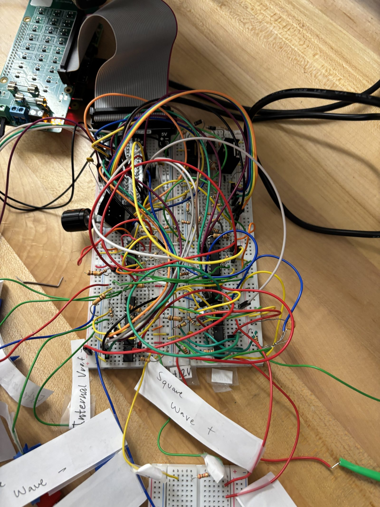
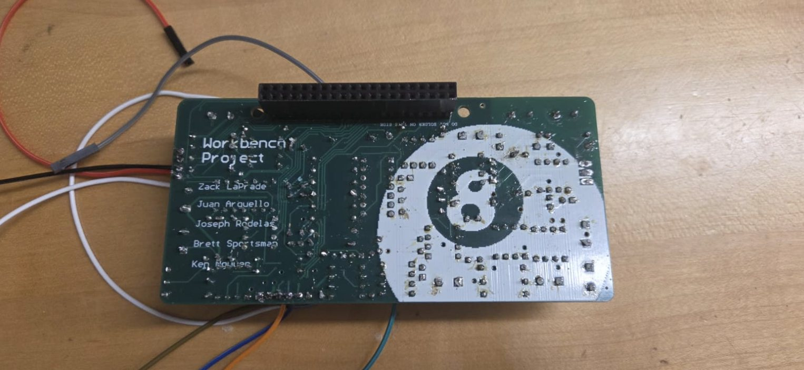

Four instruments in one box — function generator, voltmeter, ohmmeter, and DC reference — driven by a rotary encoder and a 20×4 LCD. I led a team of five as project lead and electrical lead, and designed the analog side: the Class AB output stage, a discrete successive-approximation ADC, and the ohmmeter.

Every stage prototyped and probed on the bench first. The tape labels are the debugging.Then the board: 4 layers, dedicated ground and power planes, six revisions — hand-populated and hand-soldered.
Role
Project lead & electrical lead
Team
5 engineers
I designed
Push-pull amp, voltmeter, ohmmeter
Board
4-layer, v6
The briefBuild the instruments, don't buy them.
The constraint that made this project worth doing: no instrumentation ICs. No ADC chip, no dedicated ohmmeter front end. If the box needed to measure a voltage, we had to build the thing that measures voltage.
That turns a software exercise into an analog design problem. A Raspberry Pi has no analog input at all — so the voltmeter isn't a library call, it's a circuit you have to invent. Which is exactly the point.
I ran the project and owned the analog side of it. What follows is the part I designed.
The final board is four layers — dedicated ground and power planes, not a 2-layer student board — and it took six revisions to get there.
VoltmeterBuilding an ADC out of resistors and a comparator.
The Pi can't read an analog voltage. So I built a 6-bit successive-approximation ADC from discrete parts.
The mechanism is the classic SAR loop. An R-2R ladder DAC across six GPIO pins generates a trial voltage. A comparator compares that trial against the unknown input and reports a single bit: higher or lower. The Pi walks the bits from MSB down, keeping each one that doesn't overshoot. Six comparisons, six bits, one conversion — a binary search performed in hardware.
Why this is the thing I'd talk about in an interview: almost everyone reaches for an ADS1115 and moves on. Building the converter means you have to actually understand what an ADC is — the ladder's output impedance, the comparator's offset and propagation delay, the settling time you have to respect between trials, and why 6 bits was the honest limit rather than an arbitrary choice. You can't hand-wave any of it, because there's no datasheet doing the work for you.
R-2R ladder across six GPIOs, comparator returning one bit per trial.Six comparisons, six bits, one conversion.
The voltmeter also does double duty. The DC reference mode has to display its own output as measured by the voltmeter — the instrument checking its own work. Getting that path clean meant the reference had to stay powered while the voltmeter screen was live, which sounds trivial and was not.
OhmmeterA divider you sweep until it trips.
Same constraint, different trick. The unknown resistor sits in the top leg of a voltage divider; the bottom leg is an MCP4231 digital potentiometer in series with a fixed resistor. The Pi sweeps the digipot across its 128 steps and watches a comparator. The step at which the divider midpoint crosses the threshold tells you the unknown value.
The interesting engineering is in the fixed series resistor, because it sets where the measurable window lands. I started at 324Ω and moved to 422Ω to centre the range — which put the floor at about 526Ω and the ceiling near 9.8kΩ, covering the 500Ω–10kΩ target properly instead of wasting half the digipot's travel below the range of interest.
A comparator gives you one bit. The whole design problem is choosing where to point it.
Push-pull amplifierDriving a real load from a single supply.
The output stage is a Class AB push-pull amplifier: a TL071CP op-amp driving complementary MOSFETs — an IRFZ24N sourcing positive current and an IRF5210 sinking negative.
The supply was a single 24V rail, so I split it into ±12V with a resistor divider, Zener clamps, and a bypass capacitor to make a stable virtual ground. Not as clean as a true dual supply, but it's what the bench gave us, and the Zener-plus-cap arrangement holds the mid-rail steady enough to work against.
The detail worth defending
The MOSFETs sit inside the op-amp's feedback loop. That's what suppresses crossover distortion — the dead zone where neither device is conducting. The feedback forces the op-amp to swing hard through that region to keep the output tracking the input, so the loop hides the nonlinearity that the output stage would otherwise show. A 100Ω gate resistor limits gate current and keeps the stage from oscillating.
Class AB stage. ±12V swing into the load.
DebuggingThree bugs the bench found that the simulation didn't.
This is the section I'd read first if I were hiring someone.
The coefficient mismatch. The resistance-to-step conversion and the step-to-resistance conversion had drifted apart — two different pairs of coefficients doing what should have been inverse operations. The ohmmeter read plausibly wrong, which is the worst kind of wrong. Fixed by making one source of truth and forcing every file to use it.
The floor/ceiling logic was backwards. When the comparator saturates, you're out of range — but the two saturation cases were swapped, and the boundaries were off by about 200Ω. Only bench testing against known resistors caught it; nothing in the code looked incorrect.
Step 0 wasn't zero volts. The DC reference "clear" routine wrote step 0 to the digipot, which maps to −5V, not 0V. It should have written step 64. A midpoint isn't a minimum, and I'd assumed it was.
All three share a shape: the code was self-consistent and the reasoning was wrong. That's the failure mode simulation can't catch, and it's the argument for building the thing.

Reverse side. Five names on the silkscreen — I led the project, but I didn't build it alone.